JAVA EE
Evolução dos Serviços
Na virada do século começaram os serviços(internos e externos) usando um padrão de comunicação via XML, chamado SOAP( Simple Object Access Protocol) . Após isso, os sistemas começaram a trocar informações de diferentes linguagens e sistemas operacionais. Com essa revolução começava a era da arquitetura orientada a serviços, conhecida como SOA, que padronizava essa comunicação entre os diferente serviços. O problema desse padrão SOAP é sua complexidade em fazer qualquer coisa, por exemplo, para um serviço de consulta que retorna um simples valor. Isso tem muita abstração envolvida, com servidor de um lado e obrigatoriamente um cliente do serviço do outro, trafegando XML para ambos os lados. E tudo isso em cima do protocolo usado na internet (HTTP).
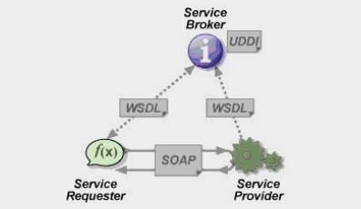
Muitos serviços SOAP sendo usados por vários sistemas apareciam rapidamente como a principal causa de lentidão, obrigando os programadores a procurarem por alternativas: trocar o serviço SOAP por um acesso direto ao banco de dados ou a um servidor Active Directory.
Com esse cenário, Roy Thomas, um dos fundadores do projeto Apache HTTP, defendeu uma tese de doutorado com uma alternativa bem simples, o famoso Representational State Transfer (Transferência de Estado Representacional), ou simplesmente REST (ou ReST). Essa simples alternativa ao SOAP aproveita os métodos existentes no protocolo HTTP para fazer as operações mais comuns existentes nos serviços, como busca e cadastro.
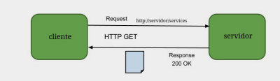
Pela simplicidade e rapidez, esse padrão foi rapidamente adotado pelo mercado.Os sistemas que usam ReST têm diferentes níveis de implementação, não muito bem definidos pelo mercado. Algo mais próximo que existe de um padrão de classificação é o trabalho de Leonard Richardson, que definiu quatro níveis de maturidade de um sistema em ReST.
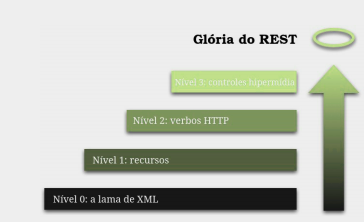
Mesmo com os serviços em ReST,as aplicações continuam a empacotar todas as funcionalidades em um lugar só, sendo classificadas como aplicações monolíticas.
Para resolver esse problema, destaca-se um subconjunto da arquitetura SOA, chamado microsserviços (microservices), que abraça a solução ReST com o objetivo de fornecer uma solução separada e independente para um problema.
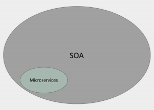
O ideal de uma aplicação é separar suas funcionalidades e se adequar conforme o cenário. Com o conceito de microsserviços, cada funcionalidade é independente e podemos crescer a sua quantidade conforme a demanda de nosso cenário.
Spring Boot
A primeira versão do Spring Boot saiu em abril de 2014. Josh Long, desenvolvedor Spring na Pivotal, afirma que a ideia inicial do Spring Boot veio da necessidade de o Spring Framework ter suporte a servidores web embutidos.
Depois, a equipe do Spring percebeu que existiam outras pendências também, como fazer aplicações prontas para nuvem (cloud-ready applications). Mais tarde, a anotação @Conditional foi criada no Spring Framework 4, e isso foi a base para que o Spring Boot fosse criado.
Portanto, o Spring Boot é uma maneira eficiente e eficaz de criar uma aplicação em Spring e facilmente colocá-la no ar, funcionando sem depender de um servidor de aplicação. O Spring Boot criou um conceito novo que não existe até o momento na especificação JEE, que acelera o desenvolvimento e simplifica bastante a vida de quem trabalha com aplicações do Spring Framework, mas não ajuda em nada quem desenvolve com a especificação oficial(com EJB, CDI ou JSF). Na próxima seção, vamos conhecer mais detalhes sobre essa revolucionária ferramenta.
Entrando no SpringBoot
O ecossistema Spring cresceu muito desde 2003. Do ponto de vista do desenvolvedor, isso é bom, pois aumenta a gama de opções para usar, e ele mesmo não precisa implementar. Para adicionar uma autenticação na aplicação, podemos usar o Spring Security; para autenticar no Facebook ou Google, podemos usar o Spring Social. Já se existir uma necessidade de criar muitos processos com horário agendado, temos o Spring Batch. E essa lista é enorme. Esse crescimento do Spring trouxe alguns problemas: com muitos módulos, vieram muitas dependências, e a configuração já não é tão simples como antes. O Spring Boot, além de impulsionar o desenvolvimento para microsserviços, ajuda na configuração também importando e configurando automaticamente todas as dependências, como veremos nas próximas seções.
Algumas vezes, ele é confundido com um simples framework, mas na verdade ele é um conceito totalmente novo de criar aplicações web. No conceito de Java Web Container, temos o framework Spring, controlando as suas regras de negócio empacotadas em um JAR, e ele deverá obedecer aos padrões (servlet, filter, diretório WEB-INF etc.)
No conceito novo, temos o Spring Boot no controle total, providenciando o servidor web e controlando as suas regras de negócio.
Arquitetura do SpringBoot
A arquitetura do Spring Boot é formada pelos componentes:- CLI — o Spring Boot CLI é uma ferramenta de linha de comando que facilita a criação de protótipos através de scripts em Groovy;
- Starters — é um conjunto de componentes de dependências que podem ser adicionados aos nossos sistemas;
- Autoconfigure — configura automaticamente os componentes carregados;
- Actuator — ajuda a monitorar e gerenciar as aplicações publicadas em produção;
- Tools — é uma IDE customizada para o desenvolvimento com Spring Boot;
- Samples — dezenas de implementações de exemplos disponíveis para uso.
Veremos os componentes com detalhes no decorrer. A seguir, veremos mais sobre o componente Tools.
A Ferramenta
O Spring Tools Suite é um conjunto de ferramentas baseadas no Eclipse para desenvolvimento de aplicações Spring. Ele se encontra disponível em https://spring.io/tools.
Existe a opção da ferramenta completa pronta para uso, ou a instalação de um plugin para um Eclipse já instalado. Vamos usar a primeira, por ser a mais simples. Se já possuir o Eclipse instalado, pode usar a segunda opção, o resultado final será o mesmo.
A instalação não tem mistério, é só descompactar o arquivo (não tem instalador) e usar. Apenas uma breve explicação para o conteúdo do pacote, nele temos três diretórios:
- 1.legal — Contém arquivos texto com as licenças open source;
- 2. pivotal — Contém o Pivotal TC Server, uma versão do Tomcat customizada para o Spring;
- 3. sts — Contém o Spring Tools Suite.
O Pivotal TC Server é um produto pago em sua versão corporativa, mas a versão developer instalada é gratuita.
Dentro do diretório sts, execute o executável chamado STS.
Além de ter suporte integrado a todo ecossistema do Spring, ele já está integrado ao Maven, Gradle e Git. Veja mais detalhes em https://spring.io/tools/sts .
Primeiro Programa
Vamos criar uma aplicação web mais simples possível e analisar o seu resultado. Para criar um novo projeto, acessamos a opção File, New e Spring Starter Project .
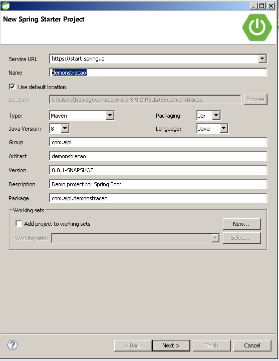
Nessa parte, temos o diferencial: escolhemos as dependências de que o nosso projeto precisa para funcionar. Ao digitarmos no campo destacado web, são exibidas todas as opções relacionadas. Como o nosso exemplo é bem simples, vamos selecionar apenas a opção Web; em outros exemplos usaremos outras opções.
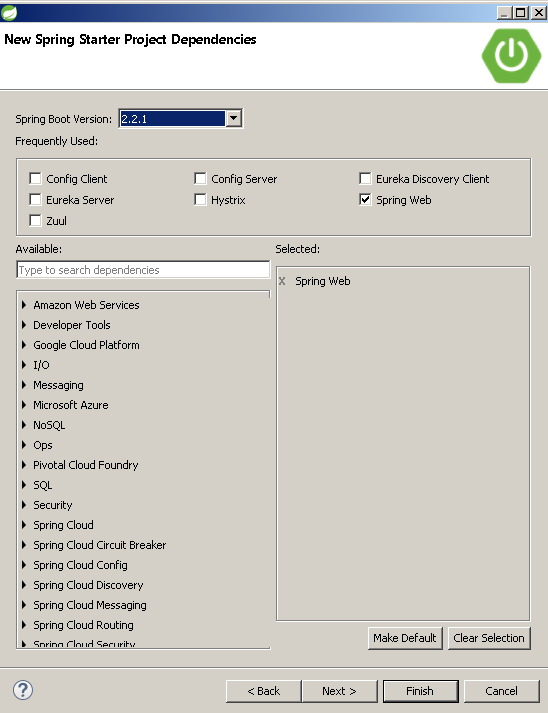
Clicando em Finish, o projeto será criado. Mas existe a opção Next , que exibe o link com alguns parâmetros.
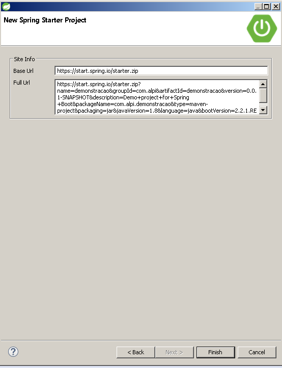
Na verdade, o que o Eclipse faz é chamar esse site passando os parâmetros, e baixar o projeto compactado. É possível fazer a mesma coisa acessando o link via web browser->http://start.spring.io .
Vamos subir o projeto criado. Para tal, use a opção no projeto Run As , e depois Spring Boot App. Outra alterna tiva mais simples é selecionar a aplicação no dashboard e clicar no botão Start.
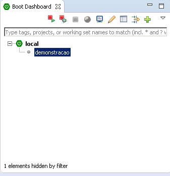
Ao subir o projeto, aparece no log que uma instância do Apache Tomcat está no ar na porta 8080.
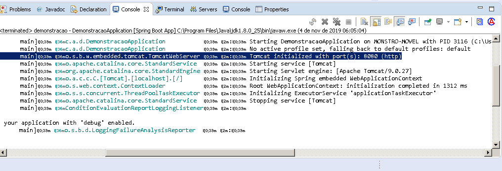
Abrindo o endereço http://localhost:8080 no web browser, percebemos uma mensagem de página não encontrada (o que é esperado, já que não definimos nenhuma).
Vamos agora criar nossa página inicial, adicionando ao projeto a seguinte classe:
package com.alpi.demonstracao;
import org.springframework.web.bind.annotation.*;
@RestController
public class PrimeiraPagina {
@RequestMapping("/")
String home() {
return "Olá Spring Boot, cheguei!!";
}
}
Se a porta 8080 padrão estiver usando outro serviço ou se você quer utilizar outra porta por algum motivo. O spring boot disponibiliza o arquivo application.properties onde podemos customizar nosso serviço. Por exemplo, alterar nossa porta de 8080 para 9000. Repare na figura além do arquivo de propriedades, a estrutura das pastas, a classe PrimeiraPagina que foi criada, o DashBoard para executar e o console exibindo o aplicativo sendo disponibilizado.

Isso é feito adicionando o parâmetro server.port=9000 no arquivo application.properties, localizado no diretório src/main/resources do projeto.
Outra alternativa para subir o projeto fora do Eclipse é usando o Maven, com o comando mvn spring-boot:run. Repare que a porta está alterada para 9000 tanto na figura acima quanto a abaixo.
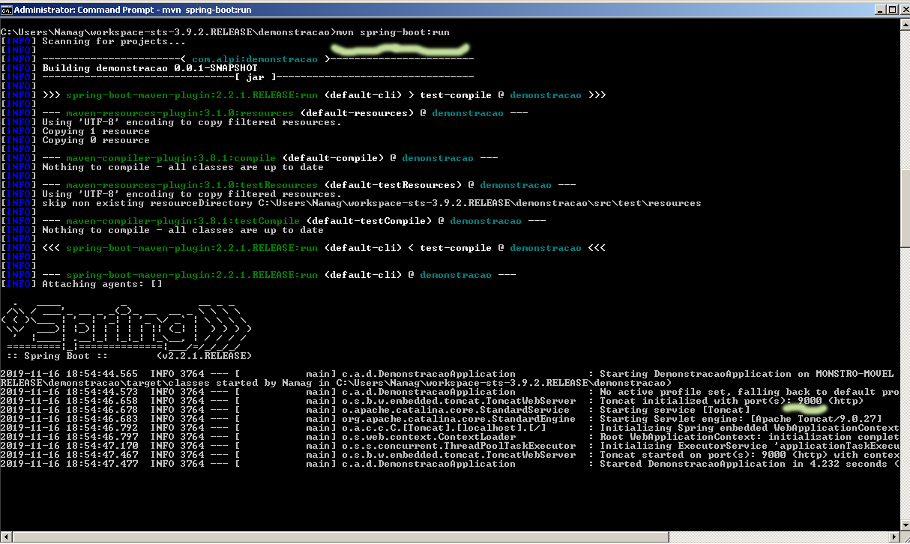
Agora vamos acessar nossa página através de localhost:9000. A figura abaixo mostra a estrutra de pasta e arquivos, o dashboord para executar o springboot, a pagina web e o console.
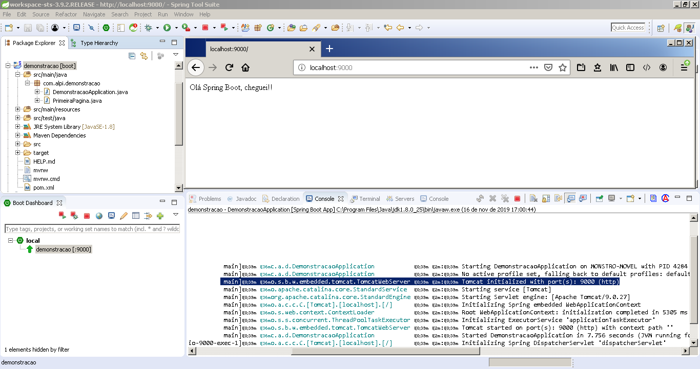
Primeiro Aplicativo
Querendo saber sobre as configurações de produtividade do Spring Boot vamos criar um aplicativo simples que consulta as propriedades existentes em uma tela simples. Teremos um escopo de banco de dados(das propriedades)exposto via serviços, sendo consumindo na tela web, via javascript.
Sobre os starters
Os starters são configurações pré-definidas da tecnologia desejada para usar em seu projeto. O uso do starter facilita muito o desenvolvimento, pois ajusta automaticamente todas as bibliotecas e versões, livrando o desenvolvedor dessa tarefa trabalhosa. Não devemos nos preocupar como que eles funcionam, nós apenas usamos e é garantido que não ocorrerá nenhum problema de biblioteca. No exemplo inicial, usamos o starter web , que nos proporciona apenas uma aplicação web simples. Para mais opções, será necessário usar mais starters.
Com o nosso escopo definido (se fosse em uma aplicação Java web tradicional, sem nenhum framework), a implementação seria com:
- Java Servlets para os serviços ReST;
- JDBC para acessar o banco de dados
- Manualmente converter os dados em JSON;
- Manualmente carregar os dados para o banco de dados;
- JSP com Bootstrap para layout;
- JSP com JQuery para chamar os serviços ReST;
- Servlet Contêiner para rodar a aplicação.
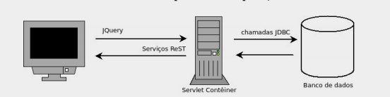
Com Spring Framework a lista seria assim:
- Spring MVC para os serviços ReST
- Spring MVC para converter os dados em JSON;
- Spring Data para acessar ao banco de dados;
- Spring Data para carregar os dados para o banco de dados;
- JSP com Bootstrap para layout;
- JSP com JQuery para chamar os serviços ReST;
- Servlet Contêiner para rodar a aplicação.
SPRING MVC é o projeto que implementa o padrão MVC, além de fornecer suporte à injeção de dependência, JPA, JDBC, entre outras opções. Veja mais informações em http://projects.spring.io/spring-framework .
Já o Spring Data fornece um modelo de programação consistente e familiar, baseado no Spring, para acesso aos dados. Veja mais informações em http://projects.spring.io/spring-data/.
Com o spring Boot, para fazer as operações da lista, vamos usar os seguintes starters:
- spring-boot-starter-web (Spring Web)
- spring-boot-starter-data-jpa(Spring Data Jpa)
- spring-boot-starter-data-rest( Rest Repositories )
- spring-boot-starter-tomcat(Spring Web)
Iniciamos criando um novo projeto como o exemplo anterior. Então, acessamos a opção File, New e Spring Starter Project. Em seguida, informamos valores para o projeto.
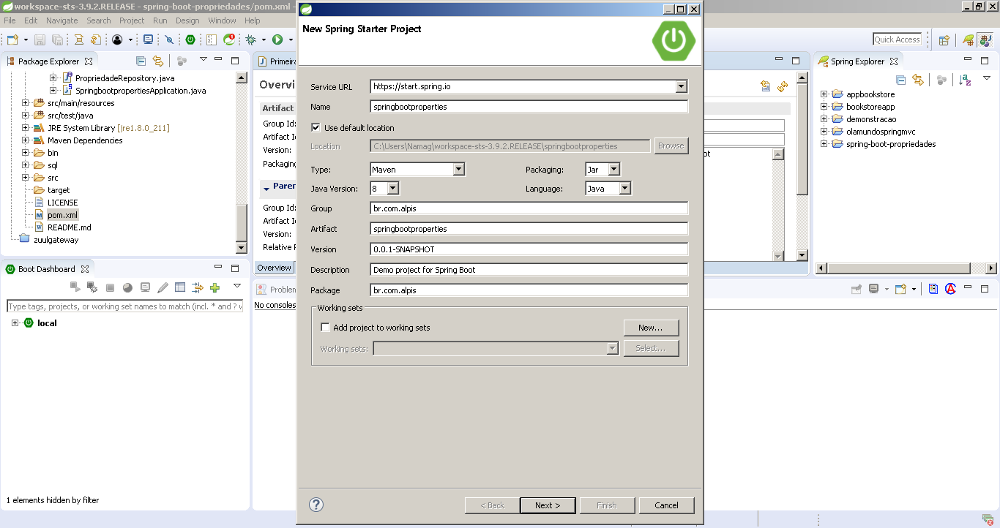
Essas são as opções que escolheremos:
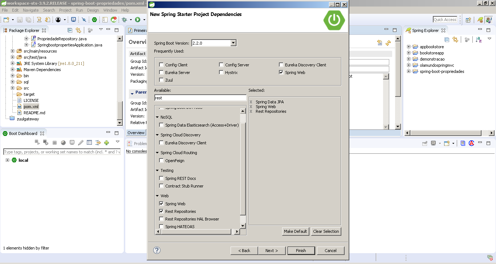
Análise de Dados
Após ter criado o projeto vamos analisar os dados. Vamos trabalhar com as propriedades da seguine maneira:
- Uma categoria tem varias subcategorias que tem várias propriedades.
- Cada propredade tem um nome, uma valor e uma descrição.
Da maneira que que fizemos anteriormente configurando o server.port iremos fazer com com a carga que daremos no banco de dados:
insert into propriedade
(categoria,subcategoria,nome,valor,descricao) values
('WEB PROPERTIES','EMBEDDED SERVER CONFIGURATION','server.port',
'8080','Server HTTP port');
Fazendo essa análise podemos agora criar a classe de domínio representando as informações da seguinte forma:
@Entity
public class Propriedade {
@Id
private String nome;
private String valor;
private String descricao;
private String categoria;
private String subcategoria;
/* getters e setters */
Automaticamente o Spring Boot fará a carga inicial, precisamos apenas colocar o arquivo SQL de carga chamado data.sql, no diretório resources.
Vamos usar o banco de dados em memória e colocar as propriedades a seguir no arquivo de propriedades application.properties.
spring.h2.console.enabled=true spring.datasource.url=jdbc:h2:mem:mydatabase
Será criada uma rotina de busca pelo nome, categoria ou subcategoria com Spring Data. Este serviço será chamado pela tela Web:
public interface PropriedadeRepository extends PagingAndSortingRepository<Propriedade, String> {
@Query("Select c from Propriedade c where c.nome like %:filtro% order by categoria,subcategoria,nome")
public List<Propriedade>findByFiltro(@Param("filtro") String filtro);
}
E criamos um controller ReST do Spring MVC para repassar a chamada e chamar esse serviço:
@RestController
@RequestMapping("/api")
public class PropriedadeController {
@Autowired
private PropriedadeRepository repository;
@RequestMapping(value="/find/{filtro}",method=RequestMethod.GET)
List<Propriedade>findByFiltro
(@PathVariable("filtro")String filtro) {
return repository.findByFiltro(filtro);
}
}
A parte back-end da aplicação em Java terminou, agora precisamos fazer o front-end em HTML, que chamará os serviços usando JavaScript.
O arquivo index.html deverá ficar dentro do diretório resources/static, pois o Spring Boot espera por convenção que esses arquivos estejam lá. Dentro do diretório, teremos uma rotina JavaScript que chama o serviço de busca de propriedades e monta o HTML dinamicamente na tela com o resultado:
function propertiesService(filter) {
$.ajax({
type:"GET",
url:"/api/find/"+filter,
data:'$format=json',
dataType:'json',
success:function(data) {
var total=0;
$.each(data,function(d, results) {
$("#propTable tbody").append(
"<tr>"
+ "<td class=\"text-nowrap\">"
+ results.categoria
+ "</td>" + "<td class=\"text-nowrap\">"
+ results.subcategoria
+ "</td>" + "<td class=\"text-nowrap\">"
+ results.nome
+ "</td>" + "<td class=\"text-nowrap\">"
+ results.valor
+ "</td>" + "<td class=\"text-nowrap\">"
+ results.descricao
+ "</td>"
+ "</tr>")
total++;
})
$("#results").text(total+" found");
}
});
};
E finalmente, para informar ao Spring Boot que usaremos uma aplicação web baseada em Servlets, na nossa classe SpringbootpropertiesApplication usamos a herança da classe SpringBootServletInitializer, e adicionamos uma implementação para identificar os arquivos da pasta resources.
@SpringBootApplication
public class SpringbootpropertiesApplication
extends SpringBootServletInitializer{
public static void main(String[]args){
SpringApplication.run(SpringbootpropertiesApplication.class,args);
}
@Override
protected SpringApplicationBuilder configure(SpringApplicationBuilder application) {
return application.sources(SpringbootpropertiesApplication.class);
}
}
E adicionaremos as novas dependências ao arquivo pom.xml :
O APACHE MAVEN é uma ferramenta usada para gerenciar as dependências e automatizar seus builds. Veja mais informações em http://maven.apache.org.
org.springframework.boot spring-boot-starter-tomcat provided com.h2database h2 org.webjars bootstrap 3.3.7-1 org.webjars jquery 3.1.1
Os WEBJARS são bibliotecas web(como jQuery ou Bootstrap),empacotadas em arquivos JAR. Eles são uma opção interessante para aplicações sem acesso à internet, pois não é necessário nenhum download. Usamos no nosso projeto algumas. Veja mais opções em http://www.webjars.org.
Executando o Aplicativo
Depois de subir o aplicativo pelo Eclipse (ou manualmente com mvn spring-boot:run) observemos na figura abaixo as configurações no console em seguida a tela web e o campo de busca que será acionado após apertar enter e o resultado aparecerá sem reload da página.
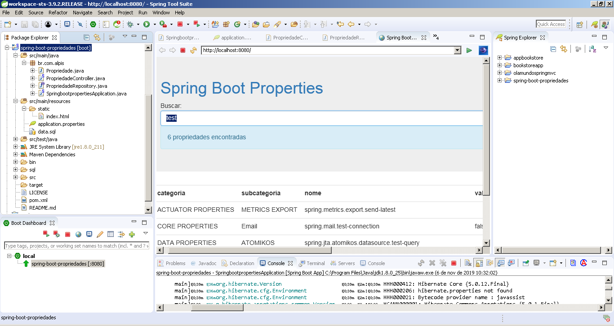
Conhecendo o console H2
Ao buscarmos por h2, notamos que existe a propriedade spring.h2.console.enabled, que tem como valor padrão false. Mas no nosso arquivo de propriedades application.properties, já ajustamos essa propriedade para true .
Vamos acessar o console H2 para conseguirmos executar comandos SQL no banco de dados em memória, através da URL http://localhost:8080/h2-console/. Esse caminho pode ser alterado com a propriedade spring.h2.console.path.
Preenchendo o campo de JDBC URL com o mesmo valor que colocarmos nas propriedades(jdbc:h2:mem:mydatabase), conseguimos acessar os dados depois de conectar:
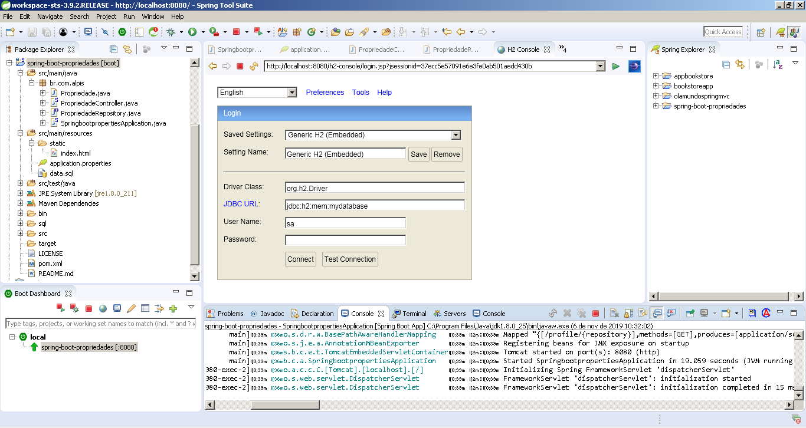
Dentro do console, podemos fazer consultas em SQL, como por exemplo, listar as propriedades que começam com spring.h2
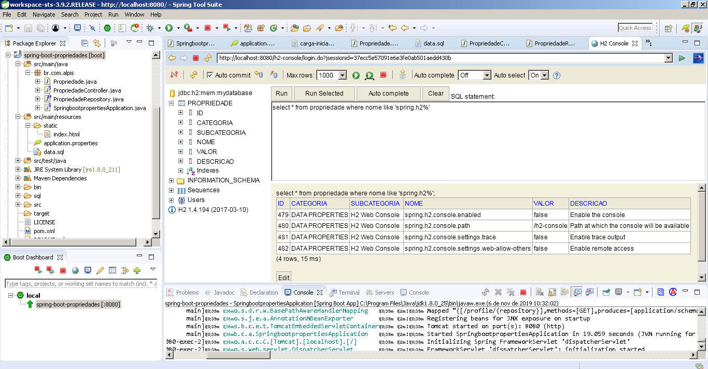
Agora vamos criar um sistema mais robusto e com uma arquitetura mais complexa
Requisitos de Negocio
Com o Spring Boot é possível fazer muita coisa com pouco código. Vamos começar a planejar o aplicativo e os principais requsitos do negócio são:
- Tela de cadastro de clientes;
- Tela de cadastro de itens;
- Tela de cadastro de pedidos;
- Tela de fazer pedido com opção de oferta;
- Notificar o cliente do novo pedido recebido.
Os requisitos técnicos são:
- Ser um projeto 100% web;
- Usar um banco de dados MySQL;
- Expor serviços via ReST;
- Alta disponibilidade para fazer novos pedidos;
- Tela para validar se o ambiente está ok;
- Uso de AngularJS na tela de novo pedido.
Esse diagrama mostra a clássica regra de um conjunto de clientes, em que cada um deles pode fazer um pedido, e cada pedido pode conter um ou mais itens.
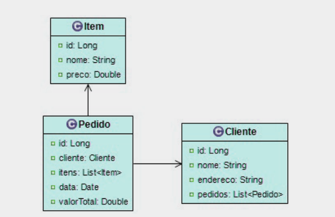
Iniciando o Projeto
Precisaremos de banco de dados, então vamos usar a opção de JPA. Vamos também precisar de templates para gerar as páginas dinâmicas. Para tal, ficamos com a engine recomendada pela equipe do Spring, o Thymeleaf, que veremos com detalhes mais adiante. Agora, detalharemos a implementação do back-end
O Java Persistence API(ou simplesmente JPA)é uma API padrão da linguagem Java que descreve uma interface comum para frameworks de persistência de dados. Veja mais informações em ->http://www.oracle.com/technetwork/java/javaee/tech/persistence-jsp-140049.html.
No nosso projeto do Eclipse springbootdelivery, vamos escolher essas duas opções e também a opção de Rest Repositories. Se tudo deu certo, o projeto terá dentro do seu pom.xml os seguintes starters:
org.springframework.boot spring-boot-starter-data-jpa org.springframework.boot spring-boot-starter-data-rest org.springframework.boot spring-boot-starter-thymeleaf org.springframework.boot spring-boot-starter-web org.springframework.boot spring-boot-starter-test test
Criando Classes de Domínio
Conforme o diagrama de classes, criamos três classes de domínio, já com as anotações de validação. A classe pai de todo o sistema é a de clientes, que contém: nome, endereço e uma lista de pedidos.
@Entity
public class Cliente{
@Id
@GeneratedValue (strategy=GenerationType.IDENTITY)
private Long id;
@NotNull
@Length(min=2, max=30,message= "O tamanho do nome deve ser entre{min} e {max} caracteres")
private String nome;
@NotNull
@Length(min=2, max=300,message="O tamanho do endereço deve ser entre{min} e {max} caracteres")
private String endereco;
@OneToMany(mappedBy = "cliente",fetch= FetchType.EAGER)
@Cascade(CascadeType.ALL)
private List<Pedido> pedidos;
A classe de pedidos está ligada ao cliente e tem, além da data e o valor, uma lista de itens:
@Entity
public class Pedido{
@Id
@GeneratedValue(strategy = GenerationType.IDENTITY)
private Long id;
@ManyToOne(optional = true)
private Cliente cliente;
@ManyToMany
@Cascade(CascadeType.MERGE)
private List<Item> itens;
@DateTimeFormat(pattern = "dd-MM-yyyy")
private Date data;
@Min(1)
private Double valorTotal
Finalmente a classe Item, com o nome e o preço:
@Entity
public class Item{
@Id
@GeneratedValue(strategy=GenerationType.IDENTITY)
private Long id;
@NotNull
@Length(min=2, max=30, message="O tamanho do nome deve ser entre{min} e {max} caracteres")
private String nome;
@NotNull
@Min(value=20,message="O valor mínimo deve ser {value} reais")
private Double preco;
Repositórios
Com as classes de domínio, criaremos as classes de repositório. Com a facilidade do Spring Data, precisar gerenciar conexão, chamar PreparedStatement e fazer um loop para atribuir o ResultSet para um objeto são coisas do passado; tudo isso é implementado e usamos apenas interfaces.
@Repository
public interface ClienteRepository
extends JpaRepository<Cliente, Long> {
}
@Repository
public interface PedidoRepository
extends JpaRepository<Pedido, Long> {
}
@Repository
public interface ItemRepository
extends JpaRepository<Item, Long> {
}
A anotação @Repository foi colocada por motivos didáticos, pois o Spring Boot já reconhece que as interfaces estendem JpaRepository e carrega todos os repositórios automaticamente.
Realizando uma Carga Inicial
Como vimos no projeto anterior das propriedades do Spring Boot, ele executa facilmente scripts SQL. Mas nesse projeto, faremos a carga via Java para aprendermos a usar essa opção no Spring Boot.
Criaremos uma classe RepositoryTest para fazer a mesma coisa em Java. Inicialmente, para organizarmos os IDs do sistema, vamos definir algumas constantes para cliente, item e pedido:
private static final long ID_CLIENTE_ALAN = 11l; private static final long ID_CLIENTE_IZA = 22l; private static final long ID_ITEM1 = 100l; private static final long ID_ITEM2 = 101l; private static final long ID_ITEM3 = 102l; private static final long ID_PEDIDO1 = 1000l; private static final long ID_PEDIDO2 = 1001l; private static final long ID_PEDIDO3 = 1002l;
Depois, declaramos o repositório de cliente e o método run, que o Spring Boot chamará para ser executado:
@Autowired
private ClienteRepository clienteRepository;
@Override
public void run(ApplicationArguments applicationArguments) throws Exception {
Iniciamos declarando os clientes:
System.out.println(">>> Iniciando carga de dados...");
Cliente alan = new Cliente(ID_CLIENTE_ALAN, "Alan Santos","Sao Caetano");
Cliente iza = new Cliente(ID_CLIENTE_IZA, "Iza","Itapoa");
Depois os três itens disponíveis para venda:
Item bolo1=new Item(ID_ITEM1,"Bolo de Chocolate",25d); Item bolo2=new Item(ID_ITEM2,"Bolo de Laranja ",27d); Item doce1=new Item(ID_ITEM3,"Caixa de brigdeiros ",30d);
Em seguida, a lista de pedidos:
List<Item> listaPedidoAlan1 = new ArrayList<Item>(); listaPedidoAlan1.add(bolo1); List<Item> listaPedidoDaIza1 = new ArrayList<Item>(); listaPedidoDaIza.add(bolo2); listaPedidoDaIza.add(doce1);
Depois, montamos as listas nos objetos de pedido:
Pedido pedidoDoAlan = new Pedido(ID_PEDIDO1,alan, listaPedidoAlan1,bolo1.getPreco());
alan.novoPedido(pedidoDoAlan);
Pedido pedidoDaIza = new Pedido(ID_PEDIDO2,iza, listaPedidoIza1, bolo2.getPreco()+doce1.getPreco());
darinha.novoPedido(pedidoIza);
System.out.println(">>> Pedido 1 - Alan : " + pedidoDoAlan);
System.out.println(">>> Pedido 2 - Iza: " + pedidoDaIza);
É interessante notar que a classe ClienteRepository não tem nenhum método. Ela herdou o método saveAndFlush da classe JpaRepository, que faz parte do Spring Data.
Nesse projeto, usaremos inicialmente a base de dados em memória H2, e depois o MySQL. Mas para facilitar o desenvolvimento, adicionaremos ao arquivo pom.xml dependências dos dois:
mysql mysql-connector-java com.h2database h2
Para verificar se a carga foi feita, adicionamos ao arquivo application.properties os valores do H2 console:
#h2 spring.h2.console.enabled=true spring.h2.console.path=/h2 #jpa spring.jpa.show-sql=true spring.datasource.url=jdbc:h2:mem:docesalgados
Executando o projeto, verificamos no console o Hibernate executando os comandos SQL. Acessando o console no endereço http://localhost:8080/h2/, informamos o novo banco no JDBC URL:

E podemos verificar na figura abaixo que a carga foi feita com sucesso:
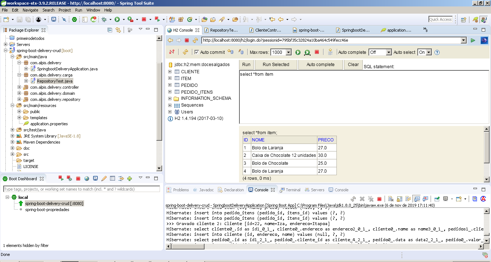
Templates
Agora precisamos criar uma página web para fazer os cadastros de clientes, itens e pedidos.
Thymeleaf é uma biblioteca Java que trabalha com templates XHTML/HTML5 para exibir dados sem quebrar a estrutura/ layout do documento. Essa capacidade de manter o layout é o que caracteriza o Thymeleaf como template natural, algo que as engines JSP, Velocity e FreeMarker não têm.
O Thymeleaf trabalha com os seus argumentos dentro de atributos th, que o browser ignora, e mantém o layout intacto.
Os principais atributos do Thymeleaf são:
- th:text — Exibe o conteúdo de uma variável ou expressão, como th:text="${cliente.id}";
- th:href — Monta um link relativo, exemplo: th:href="@{/clientes/}" ;
- th:src — Monta link relativo para atributo src, como th:src="@{/img/oferta.png}";
- th:action — Monta link relativo para tag atributo action de formulário, dessa forma: th:action="@{/pedidos/(form)}";
- th:field e th:object — Relaciona um objeto a um campo do formulário, como por exemplo: th:object="${cliente}" e th:field="*{id}";
- th:value — Mostra o valor do atributo value do formulário, por exemplo th:value="${cliente.id}";
- th:if — Mostra conteúdo conforme resultado da expressão, como: th:if="${clientes.empty}"
- th:each — Mostra valores de uma lista, por exemplo:th:each="item : ${itens}";
- th:class — Aplica o estilo se a expressão for válida, dessa forma: th:class="${#fields.hasErrors('id')}? 'field-error'"
Convenções do Spring Boot
Como o Spring Boot gerencia o sistema e o servidor de aplicação, não podemos colocar nossas páginas do Thymeleaf, ou melhor, nossos templates em qualquer lugar. O Spring Boot oferece algumas convenções para as aplicações web, algo bem diferente do conhecido padrão JEE.
Dentro do diretório src/main/resources , temos três opções:
- public — Contém páginas de erro padrão;
- static — Contém os arquivos estáticos da aplicação (arquivos de estilo, JavaScript e imagens)
- templates — Arquivos de template do Thymeleaf.

Layout
O Thymeleaf oferece a opção de layout padrão, que é chamado em cada página e pode ser usado para colocar os scripts comuns de layout. Seguindo a convenção do Spring Boot, dentro de src/main/resources, criaremos o arquivo layout.html.
Iniciando com o cabeçalho do layout:
<!DOCTYPE html> <html xmlns:th="http://www.thymeleaf.org" xmlns:layout="http://www.ultraq.net.nz/thymeleaf/layout"> <head>Sabor&Arte Delivery
Depois, fazemos os scripts do Bootstrap e do JQuery:
<link rel="stylesheet" href="https://maxcdn.bootstrapcdn.com/bootstrap/3.3.7/css/bootstrap.min.css"> <link rel="stylesheet" href="https://maxcdn.bootstrapcdn.com/bootstrap/3.3.7/css/bootstrap-theme.min.css"> <script src="https://maxcdn.bootstrapcdn.com/bootstrap/3.3.7/js/bootstrap.min.js"> </script> </head>
Logo sem seguida o cabeçalho com o logo:
<body><nav class="navbar navbar-default navbar-static-top">
E depois fazemos os links de menu:
Por fim, os fragmentos do layout, onde serão adicionadas as páginas dinâmicas:
cabeçalho falso
content falso</div> </body> </html>Para usarmos esse layout, usamos no cabeçalho do arquivo index.html a opção decorate. É ela que define o nome do template que a página está usando.
<!DOCTYPE html> <html xmlns:th="http://www.thymeleaf.org" xmlns:layout="http://www.ultraq.net.nz/thymeleaf/layout" layout:decorate="layout"> <head>Em seguida, especificamos o primeiro fragment(pedaço de template HTML):
<meta http-equiv="Content-Type" content="text/html; charset=UTF-8" /> </head> <body> <h1 layout:fragment="header">Sabor & Arte Painel de controleDepois fazemos o segundo fragmento:
<div layout:fragment="content" class="container"> <div class="jumbotron"> <a th:href="@{/ambiente/}" class="btn btn-lg btn-info">Ambiente <a th:href="@{/h2}" class="btn btn-lg btn-info">H2 Console <a th:href="@{/api/browser/index.html#/api/}" class="btn btn-lg btn-info">HAL-REST Browser </div> </div> </body> </html>Spring Boot carrega a versão 2. Para especificarmos uma versão do Thymeleaf, adicionamos nas propriedades do pom.xml
3.0.2.RELEASE 2.1.1
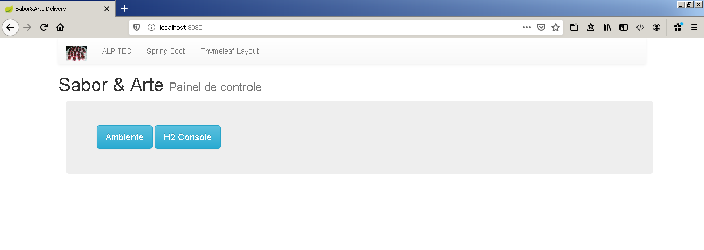
CRUD
As rotinas de CRUD (Create, Retrieve, Update, Delete) existem na maioria dos sistemas: no nosso teremos o cadastro de clientes, itens e pedidos. Como o procedimento é bem semelhante, detalharemos apenas o cadastro de clientes.
O CRUD de cliente tem três componentes básicos: a classe de domínio Cliente, a classe controller ClienteController, e três arquivos de template do Thymeleaf: form, view e list.
Observe como fica o nosso roteiro:
- Listar clientes: o método ClienteController.list chama o template list.html;
- Cadastrar cliente: o método ClienteController.createForm chama o template form.html, que chama o método ClienteController.create;
- Exibir cliente:o método ClienteController.view chama o template view.html;
- Alterar cliente: o template view.html chama o método ClienteController.alterarForm, que chama o template form.html. Este, por sua vez, chama o método ClienteController.create
- Remover cliente: o template view.html chama o método ClienteController.remover
Vamos detalhar todos os componentes envolvidos.
Na classe de domínio, temos os campos de id, nome, endereço e pedidos, com suas validações:
@Id @GeneratedValue(strategy=GenerationType.IDENTITY) private Long id; @NotNull @Length(min=2, max=30,message="O tamanho do nome deve ser entre{min} e {max} caracteres") private String nome; @NotNull @Length(min=2, max=300, message="O tamanho do endereço deve ser entre{min} e {max} caracteres") private String endereco; @OneToMany(mappedBy ="cliente",fetch = FetchType.EAGER) @Cascade(CascadeType.ALL) private List<Pedido>pedidosA classe ClienteController usa o clienteRepository para suas operações de banco de dados.
@Controller @RequestMapping("/clientes") public class ClienteController { private final ClienteRepository clienteRepository;A tela inicial retorna uma lista dos clientes cadastrados:
@GetMapping("/") public ModelAndView list(){ Iterable<Cliente> clientes=this.clienteRepository.findAll(); return new ModelAndView("clientes/list","clientes",clientes); }A lista é renderizada pelo template list.html, iniciada com o cabeçalho:
<!DOCTYPE html> <html xmlns:th="http://www.thymeleaf.org" xmlns:layout="http://www.ultraq.net.nz/thymeleaf/layout" layout:decorate="layout"> <head> <title>Clientes</title> </head> <body> <h1>layout:fragment="header">Lista de clientes</h1>Em seguida, fazemos um link para um novo cadastro e um de th:if para alguma mensagem do controller:
<div layout:fragment="content" class="container"> <a href="form.html" th:href="@{/clientes/novo}">Novo cliente</a> <div class="alert alert-success" th:if="${globalMessage}" th:text="${globalMessage}"> mensagem </div>Depois a tabela HTML para exibir a lista de clientes, iniciando com o cabeçalho e o tratamento de th:if para uma lista vazia:
<table class="table table-bordered table-striped"> <thead> <tr> <td>ID</td> <td>Nome</td> </tr> </thead> <tbody> <tr th:if="${clientes.empty}"> <td colspan="3">Sem clientes</td> </tr>Com o atributo th:each, listamos o conteúdo de um array de lista de clientes, exibindo os valores com th:text e gerando um link de cada um deles para alteração com th:each.
<tr th:each="cliente : ${clientes}"> <td th:text="${cliente.id}">1</td> <td><a href="view.html" th:href="@{'/clientes/'+${cliente.id}}" th:text="${cliente.nome}">nome</a></td> </tr> </tbody></table></div> </body> </html>A tela de detalhe de cada cliente usa esse método:
@GetMapping("{id}") public ModelAndView view(@PathVariable("id")Cliente cliente) { return new ModelAndView("clientes/view","cliente",cliente); }O detalhe de cliente é renderizado pelo template view.html, iniciada com o cabeçalho:
<html xmlns:th="http://www.thymeleaf.org" xmlns:layout="http://www.ultraq.net.nz/thymeleaf/layout" layout:decorate="layout"> <head> <title>Cliente</title> </head>Em seguida, adicionamos uma condição th:if para alguma mensagem do controller:
<body> <h1 layout:fragment="header">Cliente</h1> <div layout:fragment="content" class="well"> <div class="alert alert-success" th:if="${globalMessage}" th:text="${globalMessage}">cliente gravado com sucesso</div>Depois, adicionamos a tabela HTML para exibir o detalhe do cliente, iniciando com o cabeçalho:
<table class="table table-striped"> <thead><tr> <th>ID</th> <th>Nome</th> <th>Endereço</th> </tr></thead>Com o tx:text, exibimos o conteúdo do objeto cliente:
<tbody><tr> <td id="id" th:text="${cliente.id}">123</td> <td id="nome" th:text="${cliente.nome}">Nome</td> <td id="endereco" th:text="${cliente.endereco}">Endereço</td> </tr></tbody> </table>E finalmente, montamos dois links para alterar e remover os dados desse cliente:
<div class="pull-left"> <a href="form.html" th:href="@{'/clientes/alterar/'+ ${cliente.id}}">alterar</a> |<a href="clientes" th:href="@{'/clientes/remover/' + ${cliente.id}}">remover</a> |<a th:href = "@{/clientes/}" href="list.html">voltar</a> </div></div> </body> </html>A tela de cadastro de um novo cliente é chamada pelo método:
@GetMapping("/novo") public String createForm(@ModelAttribute Cliente cliente) { return "clientes/form"; }O formulário é renderizado pelo template form.html, iniciado com o cabeçalho:
<!DOCTYPE html> <html xmlns:th="http://www.thymeleaf.org" xmlns:layout="http://www.ultraq.net.nz/thymeleaf/layout" layout:decorate="layout"> <head> <title>Cliente</title> </head> <body> <h1> layout:fragment="header">Cadastro de cliente</h1>Em seguida, usamos th:action para o formulário, th:object para relacionar ao objeto cliente, e th:each para listar os erros de formulário (se eles existirem).
<div layout:fragment="content" class="input-form"> <div class="well"> <form id="clienteForm" th:action="@{/clientes/(form)}" th:object="${cliente}" action="#" method="post" class="form-horizontal"> <div th:if="${#fields.hasErrors('*')}" class="alert alert-error"> <p th:each="error : ${#fields.errors('*')}" th:text="${error}"> Erro de validação</p> </div>Então, usamos o th:field para relacionar aos campos dos objetos definidos em th:object:
<input type="hidden"th:field="*{id}" th:class="${#fields.hasErrors('id')} ? 'field-error'" /> <div class="form-group"> <label class="control-label col-sm-2" for="nome">Nome</label> <input class="col-sm-10" type="text" th:field="*{nome}" th:class="${#fields.hasErrors('nome')} ? 'field-error'" /> </div> <div class="form-group"> <label class="control-label col-sm-2" for="text">Endereço< /label> <textarea class="col-sm-10" th:field="*{endereco}" th:class="${#fields.hasErrors('endereco')} ? 'field-error'"> </textarea> </div>E finalmente, adicionamos o botão de enviar os dados do formulário e um link para voltar para a lista de cliente:
<div class="col-sm-offset-2 col-sm-10"> <input type="submit" value="Gravar"/> </div> <br> <a th:href="@{/clientes/}" href="clientes.html"> voltar</a> </form> </div></div> </body> </html>O formulário de cadastro de novo cliente chama esse método:
@PostMapping(params ="form") public ModelAndView create(@Valid Cliente cliente, BindingResult result, RedirectAttributes redirect){ if(result.hasErrors()){ return new ModelAndView (CLIENTE_URI + "form","formErrors",result.getAllErrors()); } cliente =this.clienteRepository.save(cliente); redirect.addFlashAttribute("globalMessage", "Cliente gravado com sucesso"); return new ModelAndView("redirect:/" + CLIENTE_URI + "{cliente.id}","cliente id",cliente.getId()); }A tela de alteração de cliente é chamada pelo método:
@GetMapping(value = "alterar/{id}") public ModelAndView alterarForm(@PathVariable("id") Cliente cliente){ return new ModelAndView("clientes/form","cliente",cliente); }E finalmente, a opção de excluir cliente chama o método:
@GetMapping(value = "remover/{id}") public ModelAndView remover(@PathVariable("id") Long id, RedirectAttributes redirect) { this.clienteRepository.delete(id); Iterable<Cliente> clientes = this.clienteRepository.findAll(); ModelAndView mv = new ModelAndView ("clientes/list","clientes",clientes); mv.addObject("globalMessage","Cliente removido com sucesso"); return mv; }Os cadastros de itens e pedidos funcionam de forma semelhante. No final, o seu projeto deve ter esses arquivos.
Na próxima seção, vamos aprender algumas dicas de aumentar a produtividade do desenvolvimento com Spring Boot.
Desenvolvimento Produtivo
O Spring Boot tem algumas opções interessantes que aceleram bastante o desenvolvimento.
Podemos usar o devtools para acelerar o desenvolvimento, pois ele faz o reload automático da aplicação a cada mudança, entre outras coisas. O LiveReload também é interessante, já que faz o recarregamento do web browser automaticamente, sem a necessidade de pressionar F5.
DEVTOOLS
O devtools é um módulo nativo do Spring Boot que oferece algumas vantagens interessantes:
- Restart automático — Ao alterar uma classe, o Spring Boot faz o restart do seu contexto rapidamente;
- Debug remoto — Permite fazer um debug remoto em uma porta específica configurada nas propriedades;
- LiveReload — Ativa a opção de LiveReload, em que o browser carrega automaticamente a página toda vez que o seu código-fonte for alterado.
Para ativar em um projeto Spring Boot, o primeiro passo é adicionar como dependência:
org.springframework.boot spring-boot-devtools true O Boot Dashboard já destaca os projetos com devtools ativo.
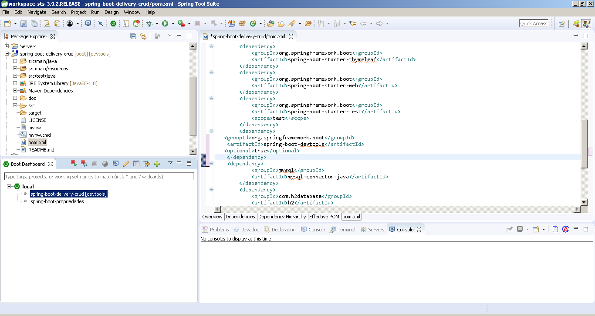Em seguida, subindo o projeto em modo debug, o devtools é ativado automaticamente. O projeto será reiniciado rapidamente a qualquer alteração de classe.
Com esse módulo ativo, não precisamos nos preocupar em parar e subir a aplicação,o restart será automático. A produtividade aumenta muito e torna esse item quase que obrigatório no desenvolvimento com Spring Boot.
LiveReload
O LiveReload é um serviço instalado no seu web browser que permite um refresh automático de página cada vez que o fonte for alterado. Isso é muito útil no desenvolvimento de telas web.
A sua instalação é muito simples. Acesse http://livereload.com/extensions/, e instale em seu web browser.
Em seguida, ao acessarmos a aplicação, percebemos no canto superior direito o logotipo do LiveReload, que são duas setas indicando o reload e um círculo ao meio. Se o círculo estiver branco no meio, o LiveReload está desligado; se ele estiver preto, ligado.
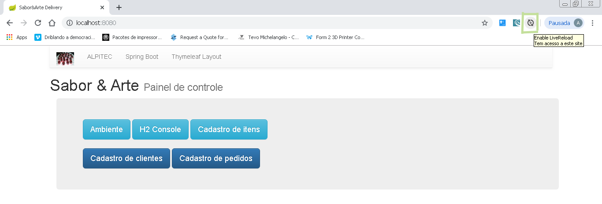
Para testarmos, inicialmente clicamos no ícone para ativar o LiveReload. Depois, editamos o template index.html adicionando o link:
<a href="http://livereload.com" class="btn btn-lg btn-info"> LiveReload </a>Logo após gravarmos o arquivo HTML, sem fazer nada automaticamente, o browser atualiza a página via LiveReload, mostrando a alteração feita:
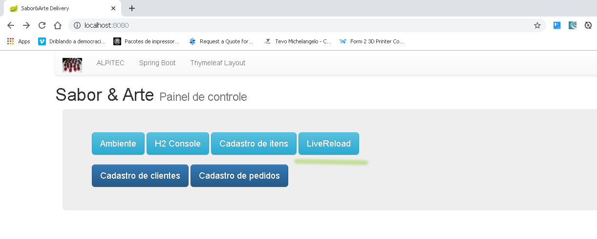
Com esse plugin ativo, economizamos algum tempo ao evitarmos fazer reload manual das páginas web no web browser.
Customizando Páginas de Erro
A página de erro 404 (de página não encontrada) dá uma mensagem um pouco confusa ao usuário: Whitelabel Error Page.
Para trocarmos a página de erro, basta criamos um arquivo 404.html dentro de src/main/resources/public/error, com o seguinte conteúdo:
<!DOCTYPE html> <html xmlns="http://www.w3.org/1999/xhtml"> <head> <meta charset="utf-8"> <title>404 - essa página não existe</title> <style> ..muito CSS... </style> </head> <body> <div id="content"> <div class="clearfix"></div> <div id="main-body"> <p class="enormous-font bree-font">404</p> <p class="big-font">Página não encontrada...</p> <hr> <p class="big-font"> Voltar para <a href="/" class="underline">home page</a> </p> </div> <div> </body> </html>Sem alterar mais nada, ao reiniciar a aplicação, a nova página de erro aparece:
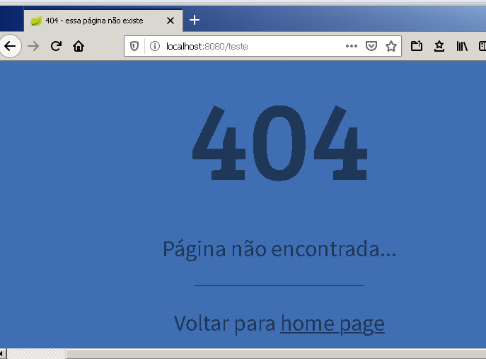
A página de erro 500 (500.html) para exibir uma mensagem amigável de sistema indisponível pode ser feita do mesmo jeito, e com o mesmo código. É só criar um arquivo com este nome e colocar no mesmo lugar(src/main/resources/public/error).
Actuator
O Actuator é um subprojeto do Spring Boot que ajuda a monitorar e gerenciar a sua aplicação quando ela for publicada (estiver em execução). O Actuator permite que sejam monitoradas informações do servidor rodando, muito útil para ver o ambiente em produção. Sua ativação é feita adicionando a dependência:
org.springframework.boot spring-boot-starter-actuator Existem várias ferramentas disponíveis dentro do Actuator através de serviços ReST, vamos destacar algumas:
- actuator - Lista todos os links disponíveis;
- dump - Faz um thread dump;
- env - Mostra properties do ConfigurableEnvironment do Spring;
- health - Mostra informações do status da aplicação;
- metrics - Mostra métricas da aplicação;
- mappings - Exibe os caminhos dos @RequestMapping
- trace - Exibe o trace dos últimos 100 requests HTTP.
A lista completa está em https://docs.spring.io/spring-boot/docs/current/reference/html/production-ready-features.html#production-ready-endpoints.
Vamos alterar a nossa página de ambiente.html e adicionar a chamada desses serviços, adicionando os links da lista anterior:
<div layout:fragment="content" class="container"> <div><table><thead> <tr><th>link</th>< th>descrição</th></tr></thead><tbody> <tr><td><p><a href="#" th:href="@{/actuator}">actuator</a></p> </td><td><p>Lista todos os links disponíveis.</p></td></tr> <tr><td><p><a href="#" th:href="@{/dump}">dump</a></p> </td><td><p>Faz um thread dump.</p></td></tr> <tr><td><p><a href="#" th:href="@{/env}">env</a></p> </td><td><p>Mostra properties do CE do Spring.</p></td></tr> <tr><td><p><a href="#" th:href="@{/health}">health</a></p> </td><td><p>Mostra informações do status da aplicação.</p> </td></tr> <tr><td><p><a href="#" th:href="@{/metrics}">metrics</a></p> </td><td><p>Mostra métricas da aplicação.</p></td></tr> <tr><td><p><a href="#" th:href="@{/mappings}">mappings</a></p> </td><td><p>Exibe os caminhos dos @RequestMapping.</p> </td></tr> <tr><td><p><a href="#" th:href="@{/trace}">trace</a></p> </td><td><p>Exibe o trace dos últimos 100 requests HTTP.</p> </td></tr> </tbody></table><br> <a href="#" th:href="@{/properties}" class="btn btn-large btn-success">System Properties</a> </div></div>Apenas alterando uma página do template, temos várias funcionalidades interessantes rodando.
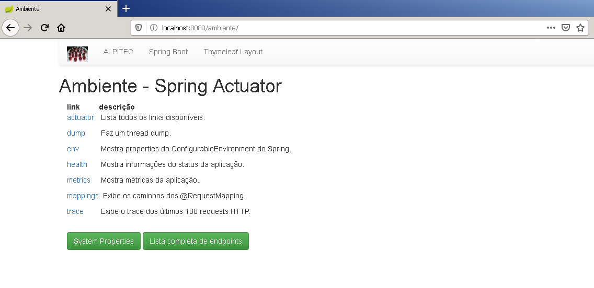
A opção health mostra informações da saúde do sistema, como a situação do banco de dados e do espaço em disco:
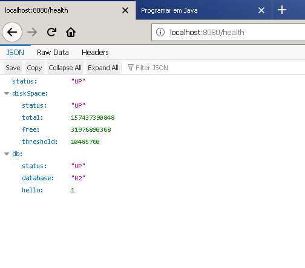
A opção metrics mostra algumas métricas do sistema, como a memória em uso, quantidade de classes, threads, sessões HTTP, operações do Garbage Collector (GC), entre outras coisas. Vale a pena destacar os counters e gaugers. Os counters sempre somam alguma coisa, como por exemplo, resposta de status HTTP 200 na raiz(counter.status.200.root: 2); já os gaugers medem o tempo de resposta da última chamada, que pode aumentar ou diminuir, como a chamada de /metrics que demora 1 ms(gauge.response.metrics:1).
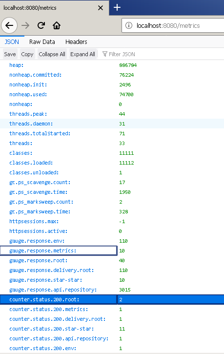
Na próxima seção, vamos ver a facilidade existente no Spring Boot de expor seus serviços ReST.
Construindo API de Serviço
O sistema já tem um cadastro de clientes, itens e pedidos, que podem ser usados pelo administrador. O que resta agora é a tela de novos pedidos, que será feita pelos clientes de Sabor&Arte Delivery. Para uma boa performance, foi escolhido o framework AngularJS para enviar os pedidos. Precisamos agora criar os serviços ReST para este fim.
HATEOAS
Já percebemos que, com o Spring Data, não precisamos mais escrever repositórios. Agora mostraremos que existe uma facilidade maior para não escrever serviços ReST também.
O termo HATEOAS(Hypermedia As The Engine Of Application State) significa hipermídia como a engine do estado da aplicação, servindo como um agente que mapeia e limita a arquitetura ReST. De acordo com o modelo de maturidade ReST de Richardson, o HATEOAS é o nível máximo que introduz a descoberta de serviços, fornecendo uma maneira de fazer um protocolo autodocumentado.
O HATEOAS é uma arquitetura mais completa do que o ReST. No nosso sistema, colocando apenas uma anotação, temos o serviço no formato HATEOAS pronto para uso. Adicionando um starter, temos uma tela de consulta aos serviços online.
Vamos ver um exemplo do HATEOAS começando com alteração no nosso repositório ItemRepository. Adicionaremos a anotação RepositoryRestResource, que define o acesso aos serviços na URI /itens.
@RepositoryRestResource(collectionResourceRel="itens",path="itens") public interface ItemRepository extends JpaRepository <Item, Long>{Em seguida, vamos implementar o navegador de serviços, adicionando uma dependência ao pom.xml:
org.springframework.data spring-data-rest-hal-browser O comportamento padrão da documentação é ficar na raiz do site. Como já temos algumas páginas lá, vamos alterar para /api, adicionando uma propriedade no arquivo application.properties:
#rest spring.data.rest.base-path=/apiDepois, colocamos um link na página inicial (index.html):
<a th:href="@{/api/browser/index.html#/api/}" class="btn btn-lg btn-info">HAL-REST Browser</a>
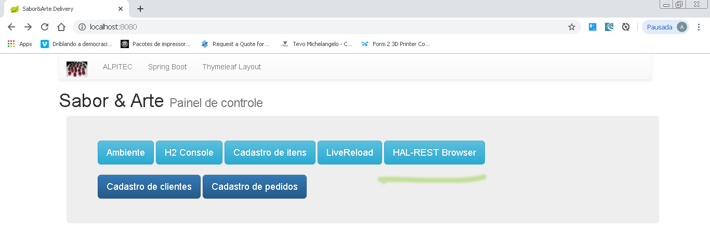
Acessando o HAL Browser, podemos navegar entre os serviços existentes nos links de pedidos, clientes e itens.
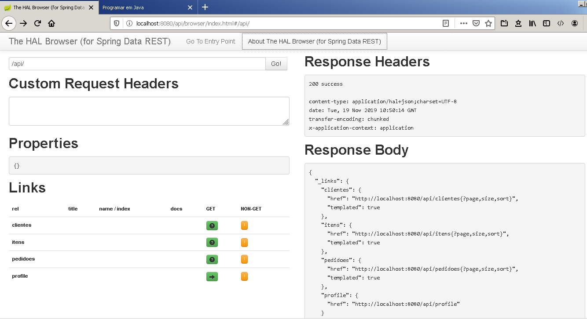
No HATEOAS, cada serviço sempre retorna além de suas informações, os endereços para o próprio serviço(self) e mais serviços.
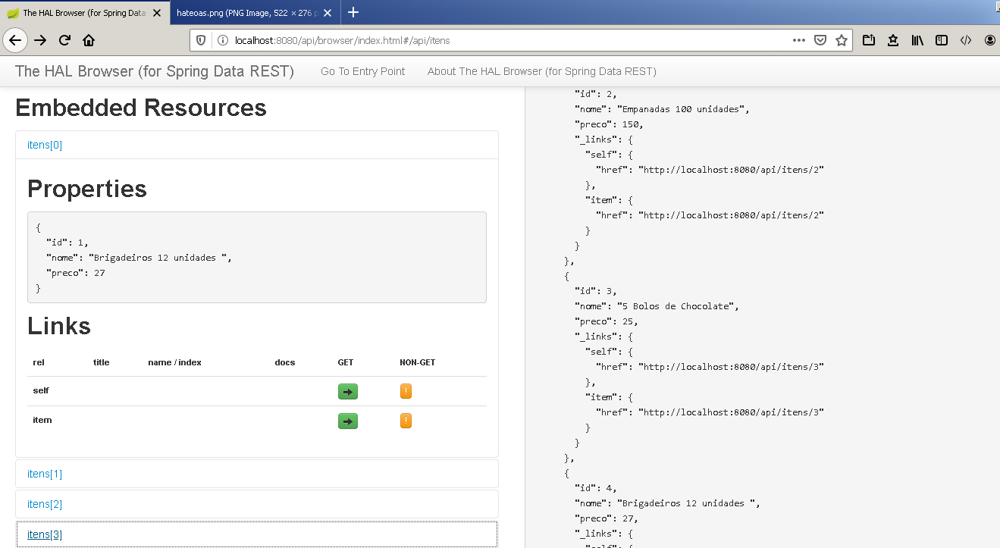
O serviço HATEOAS não retorna o ID nos serviços, o que normalmente é um problema para sistemas feitos com AngularJS ou similares. Além disso, nos serviços, ele não retorna o MIME type application/json, e sim application/hal+json.
Para resolver esse problema, precisamos adicionar o parâmetro para false no arquivo application.properties.
#Hypermedia As The Engine Of Application State spring.hateoas.use-hal-as-default-json-media-type=falseTambém precisamos criar uma classe para informar quais repositórios precisam expor o valor do campo ID nos serviços.
@Component public class SpringDataRestCustomization extends RepositoryRestConfigurerAdapter { @Override public void configureRepositoryRestConfiguration( RepositoryRestConfiguration config) { config.exposeIdsFor(Item.class,ClienteRepository.class); } }Angular Acessando REST
O que precisa ser feito é criar um controller novo para receber os novos pedidos, e uma rotina em JavaScript para chamar esse serviço.
Inicialmente, criaremos uma classe RespostaDTO usando o pattern DTO para receber e enviar os valores de um novo pedido.
public class RespostaDTO { private Double valorTotal; private Long pedido; private String mensagem; public RespostaDTO(Long pedido, Double valorTotal, String mensagem) { this.pedido = pedido; this.valorTotal = valorTotal; this.mensagem = mensagem; } // getters e settersEm seguida, criaremos o serviço que receberá novos pedidos na classe NovoPedidoController, colocando no construtor as dependências do repositório de clientes e itens.
@RestController public class NovoPedidoController { @Autowired public NovoPedidoController(ClienteRepository clienteRepository, ItemRepository itemRepository) { this.clienteRepository = clienteRepository; this.itemRepository = itemRepository; } private final ClienteRepository clienteRepository; private final ItemRepository itemRepository;Depois, declaramos o serviço que recebe o ID do cliente e uma lista de IDs de itens de pedidos, separados por vírgulas.
@GetMapping("/rest/pedido/novo/{clienteId}/{listaDeItens}") public RespostaDTO novo(@PathVariable("clienteId") Long clienteId, @PathVariable("listaDeItens") String listaDeItens){ RespostaDTO dto = new RespostaDTO(); try { Cliente c = clienteRepository.findOne(clienteId); String[] listaDeItensID = listaDeItens.split(",");Então, instanciamos um novo pedido e atualizamos a informação do cliente.
Pedido pedido = new Pedido(); double valorTotal = 0; List<Item> itensPedidos = new ArrayList<Item>(); for (String itemId : listaDeItensID){ Item item = itemRepository.findOne(Long.parseLong(itemId)); itensPedidos.add(item); valorTotal += item.getPreco(); } pedido.setItens(itensPedidos); pedido.setValorTotal(valorTotal); pedido.setData(new Date()); pedido.setCliente(c); c.getPedidos().add(pedido); this.clienteRepository.saveAndFlush(c);Então, o resultado do pedido e o valor são retornados no serviço dentro da variável dto.
List<Long> pedidosID = new ArrayList<Long>(); for (Pedido p : c.getPedidos()) { pedidosID.add(p.getId()); } Long ultimoPedido = Collections.max(pedidosID); dto = new RespostaDTO(ultimoPedido, valorTotal, "Pedido efetuado com sucesso"); }catch(Exception e) { dto.setMensagem("Erro: " + e.getMessage()); } return dto; }E para terminar o back-end, adicionamos o método à classe IndexController para chamar a página inicial de novo pedido.
@GetMapping("/delivery") public String delivery() { return "delivery/index"; }No front-end, precisamos colocar no index.html um link chamando a página de pedidos:
<a th:href="@{/delivery/}" class="btn btn-lg btn-info">Delivery</a>E finalmente, dentro de src/main/resources/templates, vamos criar a pasta delivery, e dentro dela, o arquivo index.html com o nosso código em AngularJS para chamar o serviço de novo pedido.
Inicialmente, começamos com a rotina que lista os itens com o nome e preço dentro de um checkbox:
<div ng-controller="pedidoController"> <form class="form-horizontal"> <fieldset> <legend>Delivery - Faça seu Pedido</legend> <div class="form-group"> <label class="col-md-12" for="checkboxes"> <img alt="" src="../img/tumbl-slide1.jpg" style="width:50px; margin:-12px 0px;"/> </label> </div> <div class="form-group"> <div class="col-md-12"> <div class="checkbox checkbox-primary" ng-repeat="i in itens"> <label for="checkboxes-0" class="opcao"> <input name="checkboxes" class=" " checklist-model="pedidoItens" checklist-value="i" ng-click="isItemSelecionado(i)" type="checkbox"> {{i.nome}} [R${{i.preco}}] </label> </div></div></div>Em seguida, a rotina para fazer o pedido, que chama a função fazerPedido:
<div class="form-group"> <label class="col-md-12" for="btnSubmit">Subtotal: R${{subTotal}} </label> </div> <div class="form-group"> <div class="col-md-12"> <button id="btnSubmit" name="btnSubmit" ng-click="fazerPedido(pedidoItens)" class="btn btn-primary">Fazer o pedido</button> </div> </div> </fieldset> </form> <div class="alert alert-success" ng-show="idPedido!=null"> <strong>Pedido {{idPedido}}</strong> {{mensagem}} </div> <div class="alert alert-warning" ng-show="idPedido!=null"> Valor do pedido: <strong>{{valorTotal}}</strong> reais. </div> <div class="alert alert-warning" ng-show="idPedido!=null"> Chamada do serviço : <strong>{{urlPedido}} </strong> </div> <fieldset>{{message}}</fieldset> </div></div>A função fazerPedido está declarada dentro do arquivo delivery.js, inicialmente declarando no formato do AngularJS e registrando a função carregarItens:
var app = angular.module("delivery",["checklist-model"], function($locationProvider){ $locationProvider.html5Mode({ enabled:true, requireBase : false }); }); app.controller('pedidoController', function($scope,$location,$http) { $scope.itens = []; $scope.subTotal = 0; $scope.pedidoItens = []; var carregarItens = function(){ $http.get("/api/itens").success(function (data) { $scope.itens = data["_embedded"]["itens"]; }).error(function (data, status) { $scope.message = "Aconteceu um problema: " + ata; }); };Depois, registramos a função fazerPedido que chama o serviço ReST:
$scope.fazerPedido = function(pedidoItens) { $scope.message =""; var pedidoStr = ""; var prefixo = ""; for (var i = 0; i < $scope.pedidoItens.length; i++) { pedidoStr+=prefixo+$scope.pedidoItens[i].id; prefixo=","; } $scope.urlPedido="/rest/pedido/novo/2/"+pedidoStr; $http.get($scope.urlPedido).success(function(data){ $scope.idPedido=data["pedido"]; $scope.mensagem=data["mensagem"]; $scope.valorTotal=data["valorTotal"]; }).error(function(data, status) { $scope.message = "Aconteceu um problema: " +"Status:"+ data.status+ " - error:"+data.error; }); }; $scope.isItemSelecionado = function(){ if (this.checked) $scope.subTotal+=this.i.preco; else $scope.subTotal-=this.i.preco; } carregarItens(); });Subindo a aplicação, no link delivery, temos a lista dos itens carregada e chamando o serviço:
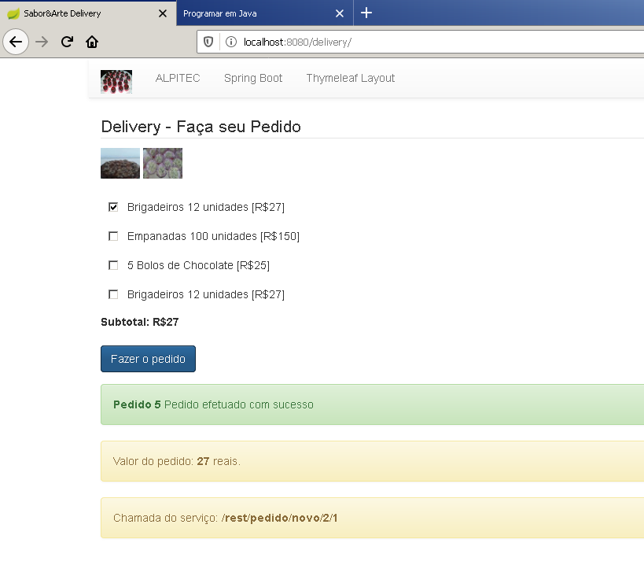
Ao clicar em fazer o pedido, o serviço ReST é chamado e a resposta é devolvida com o número do pedido.
Na próxima seção, veremos como testar a aplicação com as soluções integradas do Spring Boot.
Testando o Aplicativo
O Spring Framework é bem famoso pela sua facilidade em criar testes unitários. Desde a versão 4.3, a sua classe principal de rodar testes SpringJUnit4ClassRunner foi substituída por SpringRunner. Com ela, conseguimos subir o applicattion context do Spring e fazer funcionar todas as injeções de dependência de seu teste. Sem ela, será necessário instanciar manualmente cada objeto envolvido no teste.
Podemos usar o SpringRunner padrão para executar os nossos testes unitários. Para testar, por exemplo, se o nosso serviço de busca de clientes está funcionando adequadamente, fazemos:
@RunWith(SpringRunner.class) @SpringBootTest public class ClienteRepositoryTest { @Autowired ClienteRepository repository;O nosso sistema faz uma carga inicial de dois clientes. Portanto, vamos testar se o método findAll retorna um total maior do que o valor um.
@Test public void buscaClientesCadastrados() { Page<Cliente> clientes = this.repository.findAll(new PageRequest(0, 10)); assertThat(clientes.getTotalElements()).isGreaterThan(1L); }Rodar o teste inteiro demorou pouco mais de 18 segundos, mas o teste dos métodos bem menos de um segundo. Essa diferença existe porque o teste faz o Spring Boot subir uma instância para rodar os testes.
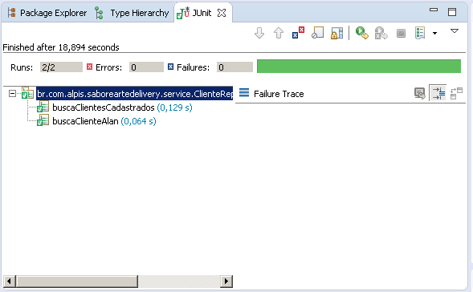
Agora vamos mostrar o código do teste de busca pelo nome, inicialmente com um valor não existente, e depois com um valor válido.
@Test public void buscaClienteAlan() { Cliente clienteNaoEncontrado = this.repository.findByNome("Alan"); assertThat(clienteNaoEncontrado).isNull(); Cliente cliente = this.repository.findByNome("Alan Santos"); assertThat(cliente).isNotNull(); assertThat(cliente.getNome()).isEqualTo("Alan Santos"); assertThat(cliente.getEndereco()).isEqualTo("Salvador"); }Os testes unitários funcionam, pois testam integralmente algumas rotinas de busca. Entretanto, eles ainda não testam o resultado de um serviço ReST, ou seja, não testam o resultado de todo o conjunto de serviços, o que é chamado de teste de integração.
Testes de Integração
Para testar o serviço como um todo, usamos uma opção interna do Spring chamada MockMvc, que é uma maneira fácil e eficiente de testar um serviço ReST. Com apenas uma linha de código, é possível testar o serviço, o seu retorno, exibir a saída no console, entre outras opções.
Outra opção seria usar o RestTemplate para fazer testes de integração, mas ele é bem mais trabalhoso de codificar.
A nossa classe de teste usa o WebApplicationContext para instanciar o objeto mvc usado em todos os testes.
@RunWith(SpringRunner.class) @SpringBootTest public class SaboreArteDeliveryApplicationTests { @Autowired private WebApplicationContext context; private MockMvc mvc; @Before public void setUp() { this.mvc = MockMvcBuilders.webAppContextSetup(this.context).build(); }Nesse teste inicial, chamamos a raiz dos serviços /api e testamos se contém um serviço chamado clientes. Usamos o método print para exibir a saída do serviço no console.
@Test public void testHome() throws Exception { String URL1="/api"; System.out.println(this.mvc.perform(get(URL1)) .andDo(print())); this.mvc.perform(get(URL1)) .andExpect(status().isOk()) .andExpect(content().string(containsString("clientes"))); }Em seguida, testamos se o preço do item 2 é igual a 150:
@Test public void findItem2() throws Exception { String URL5="/api/itens/2"; System.out.println(this.mvc.perform(get(URL5)).andDo(print())); this.mvc.perform( get(URL5)) .andExpect(status().isOk()) .andExpect(jsonPath("preco", equalTo(150.0))); }E finalmente, testamos o serviço de novos pedidos, em que o valor total é 177, entre outras validações.
@Test public void cadastraNovoPedido() throws Exception { String URL4="/rest/pedido/novo/1/1,2"; System.out.println(this.mvc.perform(get(URL4)) .andDo(print())); this.mvc.perform( get(URL4)) .andExpect(status().isOk()) .andExpect(jsonPath("valorTotal", is(177.0))) .andExpect(jsonPath("pedido", greaterThan(3))) .andExpect(jsonPath("mensagem", equalTo("Pedido efetuado com sucesso"))); }Logo abaixo a imagem dos testes feito nos métodos Rest:
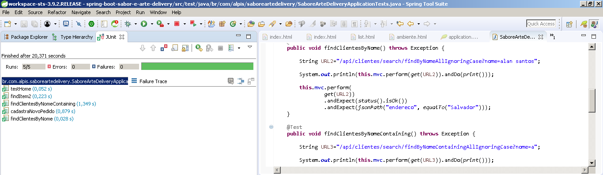
Com esses testes, conseguimos testar integralmente o serviço de pedidos e a busca de itens.
Na próxima seção, veremos como disponibilizar a nossa aplicação em diferentes ambientes, com diferentes servidores.
Empocotando e Disponiblizando o Aplicativo
O jeito padrão do Spring Boot é disponibilizar o sistema inteiro (servidor e aplicação) dentro de um pacote JAR. É a alternativa mais simples possível.
Para obter o JAR, basta executar o comando:
mvn install java -jar target/sabor-e-arte-delivery-1.0.0-SNAPSHOT.jarE o seu JAR está pronto para uso, e pode ser publicado no servidor de produção.
Jar Executável
Usamos manualmente o comando java -jar para subir o sistema. Temos a desvantagem de, se acontecer algum reboot do servidor, o sistema ficará fora do ar.
Para solucionar esse problema, é sugerido que use o sistema como serviço. Com isso, se a máquina reiniciar, o sistema operacional automaticamente sobe o serviço, e consequentemente o sistema.
Para usar o JAR como serviço, é preciso informar no arquivo pom.xml essa opção:
org.springframework.boot spring-boot-maven-plugin true Ao gerar o pacote, ele pode ser usado como serviço, por exemplo, em servidores Linux atuais que são gerenciados pelo Systemd(Ubuntu 15.4 ou superior). É só copiar o JAR gdd.jar para o diretório /var/run/springboot. Em seguida, no diretório /etc/systemd/system, adicionamos o arquivo gdd.service:
[Unit] Description=gdd After=syslog.target [Service] User=root ExecStart=/var/run/springboot/gdd.jar SuccessExitStatus=143 [Install] WantedBy=multi-user.targetCom isso, podemos ativar o serviço com:
systemctl enable gdd.serviceDerrubar o serviço com:
systemctl stop gdd.serviceE subir o serviço com:
systemctl start gdd.serviceVeja um exemplo de exibir o status do serviço:
#systemctl status gdd.service ● gdd.service - gdd Loaded: loaded(/etc/systemd/system/gdd.service; Active: active(running) since Sun 2017-04-09 Main PID: 11880(gdd.jar) Tasks: 34 (limit:4915) Memory:141.4M CPU: 44.370s CGroup: /system.slice/gdd.service ├─11880 /bin/bash/var/run/springboot/gdd.jar └─11911 /usr/sbin/java -Dsun.misc.URLClassPathPara as distribuições mais antigas, baseados no System V, a instalação é mais simples. Basta criar um link simbólico:
sudo ln -s /var/run/springboot/gdd.jar /etc/init.d/gddCom isso, podemos derrubar o serviço com:
service gdd stopE subir o serviço com:
service gdd startPara customizar parâmetros da VM do serviço criado, usamos um arquivo no mesmo lugar do JAR com a extensão .conf.
Editamos o arquivo /var/run/springboot/gdd.conf adicionando a seguinte linha:
JAVA_OPTS=-Xmx1024MAo reiniciar o serviço, as novas configurações serão aplicadas.
Não existe um suporte oficial para Windows, mas existe uma alternativa de usar o Windows Service Wrapper (https://github.com/kohsuke/winsw). Veja mais em: https://github.com/snicoll-scratches/spring-boot-daemon.
War
Em alguns ambientes de produção mais conservadores, não existe a opção de subir um JAR simples; é preciso subir um pacote WAR, de acordo com o padrão Java EE. Para esses casos, existe a opção de gerar o WAR. O Spring Boot automaticamente colocará todas as bibliotecas necessárias dentro desse pacote
Para gerar um pacote WAR, basta alterar no pom.xml:
<packaging>war</packaging>E depois execute o maven:
mvn install du -h target/*.war 35M target/sabor-e-arte-delivery-1.0.0-SNAPSHOT.warCom isso, o pacote WAR pode ser publicado em um Tomcat, Jetty, JBoss ou WildFly, sem nenhum problema.
TomCat/Jetty/Underflow
Os diferentes contêineres de aplicação existentes possuem vantagens e desvantagens, e foge do escopo discutir cada uma delas. O que é importante saber é entender de que maneira podemos alterar o contêiner usado.
A implementação de contêiner web padrão é Tomcat. Mas podemos mudar para o Jetty, veja:
org.springframework.boot spring-boot-starter-web org.springframework.boot spring-boot-starter-tomcat org.springframework.boot spring-boot-starter-jetty
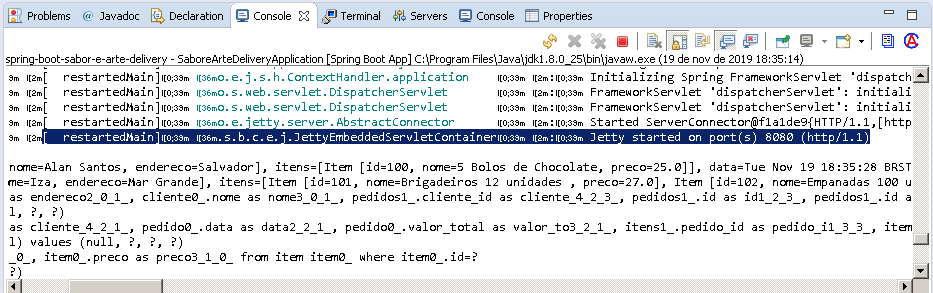
Da mesma maneira, podemos trocar pelo Undertow:
org.springframework.boot spring-boot-starter-web org.springframework.boot spring-boot-starter-tomcat org.springframework.boot spring-boot-starter-undertow
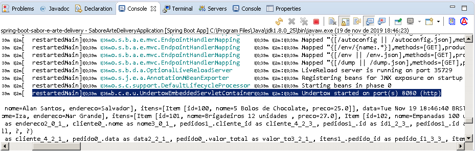
Existem dezenas de configurações de contêiner(todas começam com server.) para colocar no arquivo application.properties : algumas específicas para Tomcat, Jetty ou Undertow, e outras genéricas, como essa:
server.compression.enabled=trueTodas as configurações genéricas serão aplicadas ao contêiner escolhido para rodar. Se por acaso existir uma configuração específica para Tomcat, e o sistema subir com o Jetty, a configuração é simplesmente ignorada e o sistema sobe sem problemas.
Na próxima seção, vamos ver como usar o Spring Boot na nuvem.
Subindo para Nuvem
Quando usamos ambientes diferentes, temos um problema comum: os servidores mudam, usuários e senhas também. Para gerenciar essas mudanças, usamos o esquema de perfil(profile) do Spring Boot.
Profiles
Os profiles(perfis) são usados para a aplicação rodar com uma configuração diferenciada. Isso é muito útil para rodar o sistema em bancos de dados diferentes, ou algum comportamento no sistema que só é ativado em produção.
Enviar Emails
O envio de e-mails é um bom exemplo de uma funcionalidade que deve existir apenas em produção. Porém, como diferenciar isso no sistema? Vamos inicialmente implementar uma notificação para confirmar um pedido realizado no nosso sistema de delivery. A rotina de envio será uma interface:
package com.alpis.delivery.dto; public interface Notificacao { boolean envioAtivo(); }Uma classe utilitária de envio de e-mail para cada pedido fará um teste com o método envioAtivo e, apenas em caso afirmativo, fará o envio da notificação ao cliente.
@Component public class EnviaNotificacao { @Autowired Notificacao notificacao; public void enviaEmail(Cliente cliente,Pedido pedido) { if (notificacao.envioAtivo()) { /* codigo de envio */ System.out.println("Notificacao enviada!"); } else { System.out.println("Notificacao desligada!"); } } }Vamos alterar a nossa classe de NovoPedidoController para enviar a notificação após um novo pedido:
this.clienteRepository.saveAndFlush(c); enviaNotificacao.enviaEmail(c,pedido);Vamos criar uma implementação da interface de produção chamada ProdNotificacaoConfig, que retorna true(pois o envio de e-mails deve funcionar apenas em produção).
@Component @Profile("prod") public class ProdNotificacaoConfig implements Notificacao { @Override public boolean envioAtivo() { return true; } }A classe ProdNotificacaoConfig possui a anotação @Profile("prod"), indicando que será instanciada apenas quando esse perfil estiver ativo. Já a classe DevNotificacaoConfigpossui a anotação @Profile("!prod"), indicando que será instanciada quando o perfil ativo for diferente de prod. Para definirmos um perfil padrão, podemos colocar no application.properties:
#profile spring.profiles.active=devNas variáveis de ambiente, também é possível visualizar o ambiente usado:
Fazendo o teste do pedido usando o modo desenvolvedor:
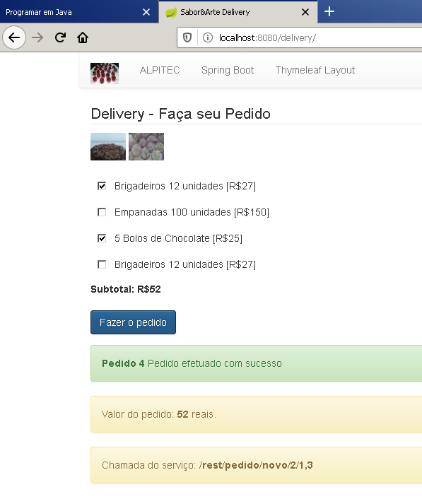
Ao fazer o pedido, observamos nos logs que a mensagem não foi enviada (como esperado) , porem a notificação por e-mail está desativado.
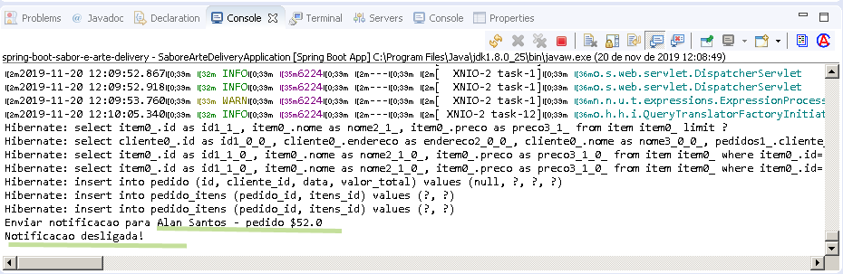
Para testar o perfil prod e sobrescrever o valor definido em application.properties, use a opção de linha de comando:
mvn spring-boot:run -Drun.arguments="--spring.profiles.active=prod"Veja que agora mudou:
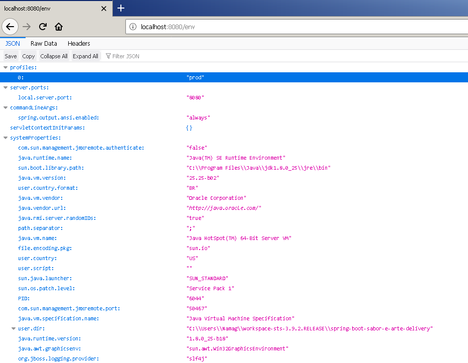
Fazendo pedidos no modo produção

Notificação do email enviado:
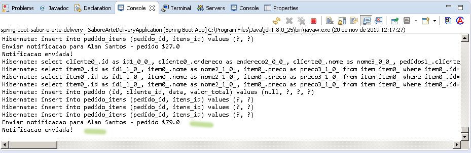
Aqui temos uma poderosa ferramenta para manipular os sistemas com Spring Boot. Sem nenhuma alteração no códigofonte, apenas passando um parâmetro definindo o profile, conseguimos mudar completamente o comportamento do sistema.
Usamos um exemplo simples de envio de e-mails apenas em produção. Mas isso pode se estender a outros níveis, como por exemplo, profile de diferentes bancos de dados ou diferentes servidores.
Usando Profiles para Heroku
Cada perfil novo do Spring Boot é um arquivo properties novo. Vamos criar um em nosso exemplo para usar o banco de dados MySQL e H2 local e Postgres para nuvem.
É bem comum o banco de dados local ser diferente do servidor de nuvem, pois informações de conexão certamente não serão iguais. Portanto, o profile ajuda a aplicação se ajustar conforme a necessidade.
As dependências do Mysql e H2 Database já foram colocadas no início do projeto.
Vamos criar o arquivo para trabalhar localmente, o application-mysql.properties:
# jpa spring.jpa.show-sql=true spring.datasource.url= jdbc:mysql://localhost:3306/saboreartedb spring.datasource.username=admsaboreartedb spring.datasource.password=saboreartedbcod spring.jpa.hibernate.ddl-auto=create-drop # rest spring.data.rest.base-path=/api # template spring.thymeleaf.cache=false # Hypermedia As The Engine Of Application State spring.hateoas.use-hal-as-default-json-media-type=false # permite acesso ao Actuator management.security.enabled=false # profile spring.profiles.active=mysqlCiraremos o arquivo externo applicaion.properties que uilizará o perfil de desenvolvedor com o Banco H2 e faremos testes antes de colocar em produção no mysql local e na nuvem.
# h2 spring.h2.console.enabled=true spring.h2.console.path=/h2 # jpa spring.jpa.show-sql=true spring.datasource.url=jdbc:h2:mem:saboreartedb #rest spring.data.rest.base-path=/api # template spring.thymeleaf.cache = false # Hypermedia As The Engin e Of Application State spring.hateoas.use-hal-as-default-json-media-type=false # banner spring.banner.image.width=150 # permite acesso ao Actuator management.security.enabled=false # profile spring.profiles.active=devCriaremos agora o arquivo para trabalhar na nuvem application-heroku.properties que vai trabalhar com o banco de dados Postgres:
Vamos adcionar a dependência que falta:
org.postgresql postgresql runtime vamos utilizar o Postgres no Heroku, então criaremos um arquivo especial para ele. O arquivo será o src/main/resources/application-heroku.properties. Ele irá sobrescrever algumas das propriedades que estão no application.properties.
# # Ative esse profile com: # # mvn spring-boot:run -Drun.arguments="--spring.profiles.active=heroku" # # jpa spring.jpa.show-sql=true spring.datasource.url=${JDBC_DATABASE_URL} spring.datasource.username= spring.datasource.password= spring.jpa.hibernate.ddl-auto=create-dropA propriedade url ganha o valor referente à variável de ambiente JDBC_DATABASE_URL. Ela é configurada pelo Heroku e, portanto, não precisamos nos preocupar. As propriedades username e password devem ficar vazias, sobrescrevendo o arquivo application.properties. Esses dois valores já estão junto com a url.
O Spring Boot permite que você externalize sua configuração para poder trabalhar com o mesmo código de aplicativo em diferentes ambientes. Você pode usar arquivos de propriedades, arquivos YAML, variáveis de ambiente e argumentos da linha de comandos para externalizar a configuração.
Se quisermos substituir o mysql usado localmente pelo postgres faremos de duas maneiras. Lembrando que o ideal é não utilizar os arquivos simultaneamente.
Com arquivos YAML, criando o arquivo application.yml:
datasource: url: jdbc:postgresql://localhost/saboreartedb username: admsaboreartedb password: saboreartedbcod driverClassName: org.postgresql.Driver spring: thymeleaf: cache: false check-template: true check-template-location: true content-type: text/html enabled: true encoding: UTF-8 mode: HTML prefix: classpath:/templates/ suffix: .html # excluded-view-names: # template-resolver-order: # view-names: logging: level: root: WARN com.memorynotfound: DEBUG org.springframework.web: INFO org.springframework.security: INFOUma outra forma é desabilitando a configurção do Datasource automático através de anotações:
@EnableAutoConfiguration(exclude = {DataSourceAutoConfiguration.class})Use essa anotação na classe main da aplicação. Veja o ó exemplo do código a seguir:
package br.com.alpis.saboreartedelivery; import javax.sql.DataSource; import org.springframework.boot.SpringApplication; import org.springframework.boot.autoconfigure.EnableAutoConfiguration; import org.springframework.boot.autoconfigure.SpringBootApplication; import org.springframework.boot.autoconfigure.jdbc.DataSourceAutoConfiguration; import org.springframework.context.annotation.Bean; import org.springframework.context.annotation.ComponentScan; import org.springframework.jdbc.datasource.DriverManagerDataSource; @SpringBootApplication @ComponentScan(basePackages = "br.com.alpis") @EnableAutoConfiguration(exclude = {DataSourceAutoConfiguration.class}) public class SaboreArteDeliveryApplication { public static void main(String[] args) { SpringApplication.run(SaboreArteDeliveryApplication.class, args); } @Bean public DataSource dataSource(){ DriverManagerDataSource dataSource = new DriverManagerDataSource(); dataSource.setDriverClassName("org.postgresql.Driver"); dataSource.setUrl("jdbc:postgresql://localhost:5432/saboreartedb"); dataSource.setUsername( "postgres" ); dataSource.setPassword( "" ); return dataSource; } }Como esperado, os parâmetros de conexão ao banco de dados (spring.datasource.url) são diferentes nos arquivos properties.
Para subir o perfil MySQL, basta chamar na linha de comando:
mvn spring-boot:run -Drun.arguments="--spring.profiles.active=mysql"Dentro do Eclipse, é possível escolher o perfil na opção Run e Debug Configurations:
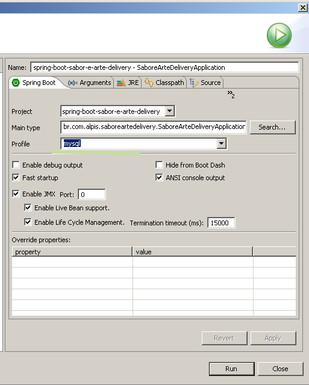
Heroku
Heroku é uma empresa que oferece serviço de hospedagem na nuvem (Platform-as-a-Service, ou PaaS) suportando várias linguagens de programação. Existem outras opções no mercado, mas a maioria delas é paga. Então, vamos usar o Heroku que oferece uma opção gratuita bem simples de usar.
Depois de criamos uma conta gratuita no Heroku (https://www.heroku.com), podemos criar uma nova aplicação sabor-e-arte, ou outro nome que desejarmos.
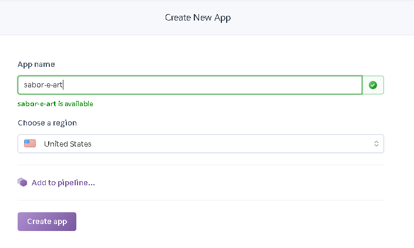
Em seguida, adicionamos um recurso (resource) de banco de dados MySQL, pois o nosso sistema precisa armazenar os dados em algum lugar.

Vamos escolher a opção gratuita:
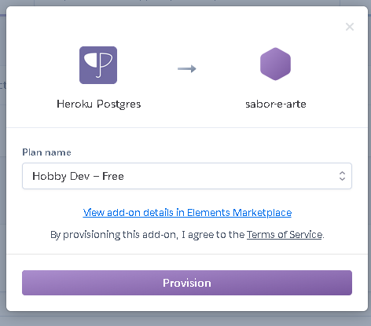
Em seguida, obtemos as informações de acesso remoto ao banco de dados na opção Settings, dentro da variável DATABASE_URL. Podemos editar nosso app também.
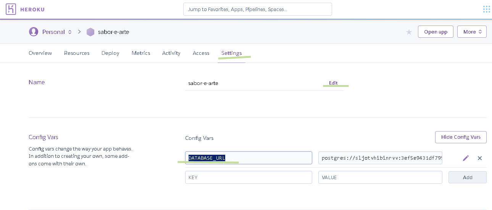
Em seguida, subimos os fontes no repositório Git do Heroku. Para subir o projeto para o Heroku, vamos precisar do Git. Você pode baixá-lo no site https://git-scm.com/downloads e a instalação é bem simples.O Git é o gerenciador de código-fonte mais utilizado no mundo. É através dele que o Heroku recebe nosso código para depois compilar e publicar.
Existe a opção de ligar o projeto ao GitHub ou ao Dropbox, se os fontes estiverem lá. Entretanto, vamos usar as fontes de nenhum repositório remoto, e sim do nosso diretório local da máquina.Vamos fazer um exemplo no qual os fontes do Heroku estão no diretório heroku , e o projeto spring-boot-sabor-e-arte-delivery foi copiado para dentro dele.
# cd heroku # cd spring-boot-sabor-e-arte-delivery # rm -rf .git # git initAqui precisamos criar o arquivo Procfile na raiz do projeto, já que ele é o ponto de partida que o Heroku vai usar logo depois de baixar e compilar os seus fontes. Nele especificaremos que o nosso sistema é uma aplicação JAR e que usará o profile heroku :
web java -Dserver.port=$PORT $JAVA_OPTS -jar target/sabor-e-arte-delivery-1.0.0-SNAPSHOT.jar --spring.config.location=classpath:application-heroku.properties -Dspring.profiles.active=herokuEm seguida, vamos adicionar ao git , commitar e fazer um push (enviar) ao servidor do Heroku.
# git add . # git commit -am "teste na nuvem do heroku" # git push heroku masterAo fazer esses comandos do Git, os nossos arquivos fontes são enviados ao repositório remoto.
Uma opção interessante para acompanhar os processos e logs da aplicação na nuvem é usar o Heroku CLI (antigo Heroku Toolbelt), que existe para diversas plataformas. Acesse https://devcenter.heroku.com/articles/heroku-cli
Obrigatoriamente, para configurar nossa aplicação, precisamos estar logados no Heroku pelo terminal. Fazemos isso com o comando login. DE Dentro do diretório heroku/spring-boot-sabor-e-arte-delivery digite este comando:
heroku loginSerá pedido um usuário e senha para você. São os mesmos que você informou no cadastro dentro do site.
Agora podemos criar nossa aplicação lá dentro do Heroku.
heroku create sabor-e-arteUsamos o comando create para isso. O parâmetro passado é o nome que nossa aplicação irá ter no Heroku. O nome não é obrigatório e se não for passado, um aleatório será gerado para você. O nome de uma aplicação no Heroku deve ser único em todo o mundo! Caso você utilize um que já existe, receberá uma mensagem de erro.
Criamos a aplicação mas caso queira criar obanco de dados Postgres via CLI o comando é esse:
heroku addons:create heroku-postgresql:hobby-devAté aqui temos a aplicação e o banco configurados, basta enviar ela agora com o comando push do Git.
Espere o processo acima encerrar e acesse o endereço https://sabor-e-arte.herokuapp.com/. Para facilitar, você pode executar o comando open do Heroku CLI, que ele já abre o browser no endereço correto para você.
heroku openÉ interessante conhecer também outros dois comandos do Heroku. O primeiro é logs --tail e o segundo é o ps.
O comando logs --tail, bem intuitivo, serve para exibir os logs, a medida que forem ocorrendo dentro da sua aplicação.
heroku logs --tailPor último, o comando ps serve para que você veja alguns detalhes sobre a sua hospedagem. Ao executá-lo:
# heroku psO comando logs serve para somente exibir os logs da aplicação.
# heroku logsVamos fazer uma alteração mínima desativado os links da h2 console e liveload no layoult da página inicial, pois foi configurado para funcionar localmente em modo desenvolvimento. Veja as alterações feitas pelo console utilizando os comandos CLI na figura abaixo:
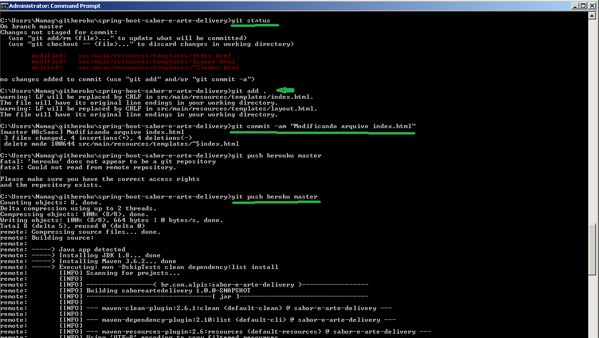
Com o deploy no ar, podemos testar no browser.
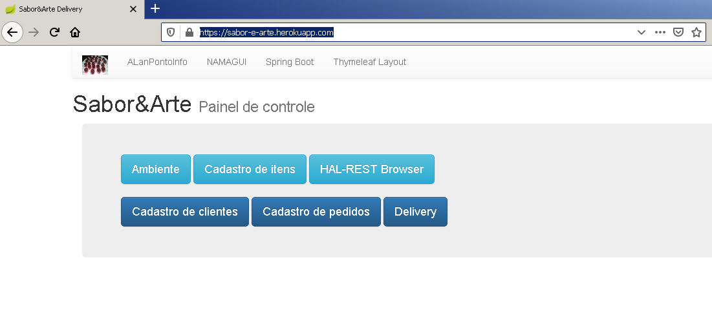
Podemos acompanhar também pelo site da Heroku como está o nosso sistema. É só logar e entrar nos detalhes da aplicação criada.
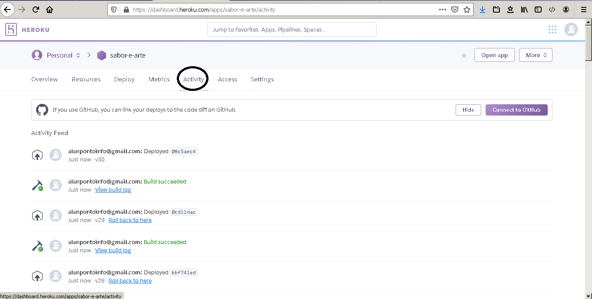